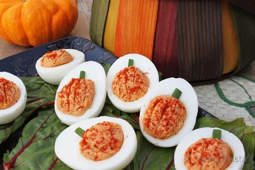

Recipe Description
Imagine the classic deviled egg packing its bags...
They’re the kind of appetizer that shows up fashionably late...
Tools & Equipment
- Pan
- Knife
- Small Bowl
- Toothpick
- Ziptop Bag
Ingredients
- 1 Spring/Green Onion
- Salt (optional)
- 1/4 teaspoon Sriracha...
- 1/2 teaspoon Spicy Mustard
- 1/2 teaspoon Paprika (optional)
- 1 teaspoon Ketchup
- 6 Eggs
- 2 tablespoons Thick Coconut Milk...
- 2 teaspoons Thai Curry Paste
Instructions
Step 1: Hard Boil the Eggs
(1 minute, then 10 minutes, then 5 minutes)Cover the eggs with an inch of cold water...
Step 2: Prepare the Filling
(10 minutes)Place the yolks and all the other ingredients...